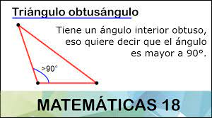

Triángulo Obtusángulo
¿Qué es?
Triángulo obtusángulo: si uno de sus ángulos interiores es obtuso (mayor de 90°); los otros dos son agudos (menores de 90°). Triángulo acutángulo: cuando sus tres ángulos interiores son menores de 90 grados.
Fórmula para calcular el área
Área(A): En este caso, nos basamos en la fórmula de Herón donde s es el semiperímetro, es decir, P/2.
Área = (b x h) / 2
Calcular el perímetro
El perímetro de un triángulo obtusángulo es igual a la suma de sus tres lados.
